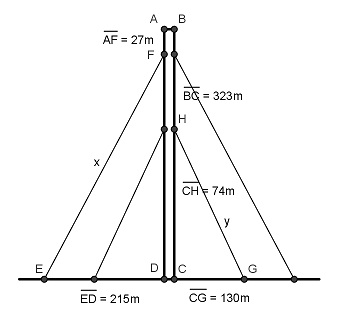

Pythagoras Aufgabe 11 Ein Sendemast ist 323 m hoch. 27 m unterhalb der Spitze sind zwei Halteseile angebracht, die 215 m vom Mast entfernt verankert sind. Zwei weitere Halteseile sind in einer Höhe von 74 m befestigt und 130 m entfernt verankert. Berechnen Sie die Länge der beiden Halteseile in m.  BC = DA = 323 m DF = DA – FA = 323 m – 27 m = 296 m Rechter Winkel bei D. Satz von Pythagoras im Dreieck EDF: EF² = x² = ED² + DF² x² = 215² m² + 296² m² = 133 841 m² |√ Größere Länge x: x = = 365,8 m Rechter Winkel bei C. Satz von Pythagoras im Dreieck CGH: GH² = y² = CG² + CH² y² = 130² m² + 74² m² = 22 376 m² |√ Kleinere Länge y : y = = 149,6 m